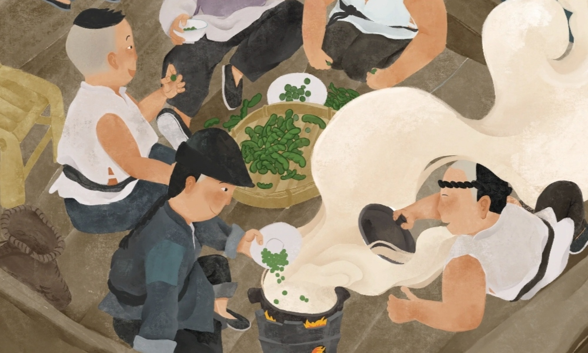
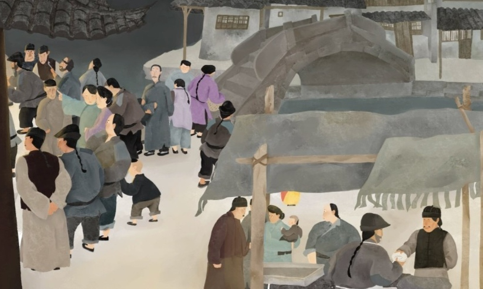

对封建社会的批判
以社会戏班为背景，通过细腻入微的描写，展现了封建社会的黑暗与腐败。
小说中的社戏艺人们虽然受封建制度的压迫，但他们却沉溺于虚荣和自私之中，追求个人利益，缺乏对社会问题的关注和反思。
鲁迅通过对社戏班的揭示，暗示封建社会是一个扭曲人性、压迫人民的制度。
小说中的社戏艺人们虽然受封建制度的压迫，但他们却沉溺于虚荣和自私之中，追求个人利益，缺乏对社会问题的关注和反思。
鲁迅通过对社戏班的揭示，暗示封建社会是一个扭曲人性、压迫人民的制度。
对人性的深刻触摸
角色形象栩栩如生，展现了人性的丑恶和复杂性。
社戏班的成员们为了争夺地位和财富，不择手段地欺骗、勾结和残害彼此。
他们面对社会的不公和压迫，没有团结起来，而是相互利用、背叛和残害。
鲁迅通过这些人物形象，深刻地揭示了人性的自私、贪婪和无情。

对艺术与现实的反思
社戏班成员们虽然是艺术工作者，但他们却陷入了现实的泥淖之中，失去了艺术的纯粹性。
他们为了追求金钱和地位，不断改变戏剧的表演内容，背离了艺术的初衷。
鲁迅通过这个情节，表达了对商业化艺术和世俗利益对艺术的侵蚀的忧虑，呼吁艺术家应该坚守艺术的本真，不受功利的干扰。

对社会改革的呼唤
《社戏》通过对社戏班的描写，揭示了社会的不公和压迫。
小说中的人物虽然身处困境，但他们却没有真正意识到问题的根源。鲁迅通过这个故事，呼唤人们应该觉醒，认识到社会的问题所在，积极参与到社会改革中来。
他借助小说的形式，通过对社戏班的揭示，引导读者思考社会问题，呼吁人们追求社会的公正与进步。
